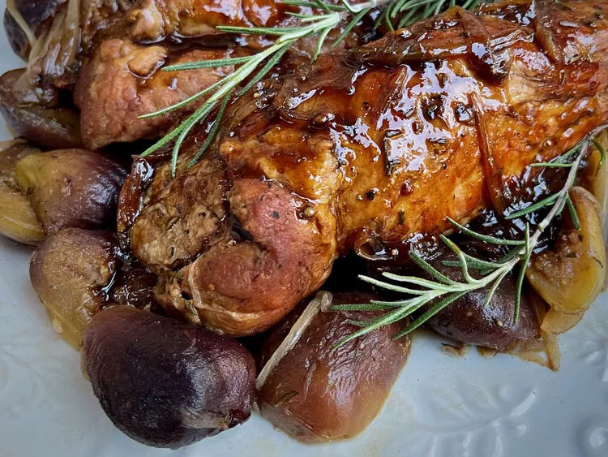

Balsamic Braised Pork Tenderloins with Fresh Figs

Description
Use fresh figs to add some sweetness to these balsamic braised pork tenderloins. Bonus: There is no added sugar! The dish starts on the stove top and finishes in the oven, freeing you up for other tasks. We like this dish with roasted potatoes that let the oven do double duty. A simple green salad completes the meal.
Ingredients
- 2 (1 1/2 pound) pork tenderloins
- 1 teaspoon kosher salt, or to taste
- ½ teaspoon freshly ground black pepper, or to taste
- 2 tablespoons olive oil
- 2 shallots, thinly sliced lengthwise
- 12 fresh figs, stemmed and halved
- 1 cup chicken broth
- ¼ cup good-quality balsamic vinegar
- 1 tablespoon minced fresh rosemary
- Fresh rosemary sprigs for garnish (optional)
Steps
- Preheat the oven to 350 degrees F (175 degrees C).
- Pat tenderloins dry and remove silver skin, if present. Season with kosher salt and freshly ground pepper, to taste.
- Pour oil into a large, oven-proof skillet and heat over medium-heat until oil shimmers. Carefully place seasoned tenderloins into the hot oil and brown on all sides, 7 to 10 minutes total.
- Add sliced shallots around tenderloins and stir, about 1 minute. Add figs, chicken broth, and balsamic vinegar. When the mixture begins to bubble, sprinkle minced rosemary over everthing.
- Cover, place in the preheated oven and bake until pork is no longer pink in the center, 25 to 30 minutes. An instant-read thermometer inserted into the center should read 145 degrees F (63 degrees C).
- Using tongs, remove pork from the skillet and place on a serving platter. With a slotted spoon, remove figs from the skillet and place around the tenderloins. Cover loosely with foil.
- Place skillet back onto the stovetop over medium-high heat. Bring pan juices to a boil and allow to reduce to about 3/4 cup, 10 to 15 minutes.
- Slice tenderloins, drizzle reduced liquid over the meat, and garnish with fresh rosemary sprigs, if desired.